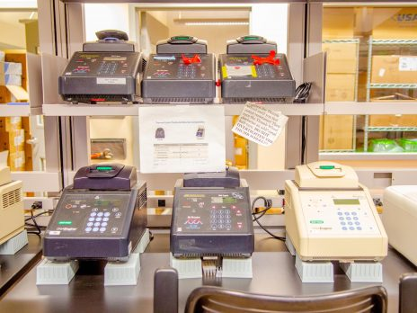
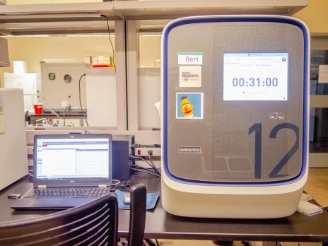

The Pathogen and Microbiome Institute (PMI) is a research unit at NAU that spans departments and colleges to gather infectious disease and microbiome scientists into a single multi-disciplinary environment.
Public health impactReal-world scientific collaboration.
Multidisciplinary Synergy
Joint efforts across computational, genomic, microbiology, immunology, and public health disciplines create synergy beyond academic silos.
World-Class Training
Ideal environment for students to achieve personal professional goals through immersive, cutting-edge research experiences.
TGen North Partnership
Close association with TGen North maximizes Arizona's investment in science through shared infrastructure and collaboration.
PMI Overview
Advanced multidisciplinary research, built for tomorrow.
The joint efforts span computational, genomic, microbiology, immunology, and public health disciplines to generate synergy that can’t be achieved within academic silos. The world-class science makes for an ideal training environment for students to achieve their personal professional goals.
The Pathogen and Microbiome Institute (PMI) is a research unit at NAU that spans departments and colleges to gather infectious disease and microbiome scientists into a single multi-disciplinary environment. The joint efforts span computational, genomic, microbiology, immunology, and public health disciplines to generate synergy that can’t be achieved within academic silos. The world-class science makes for an ideal training environment for students to achieve their personal professional goals. PMI is closely associated with TGen North, with whom the institute shares infrastructure to maximize Arizona’s investment in science.
Research unity
Cross-college collaboration across the institute.
Student excellence
Immersive training in world-class labs and facilities.
Works with low-risk microbes that pose little to no threat of infection to healthy adults.

BSL-2 Lab
Suitable for agents that pose moderate hazards to personnel and the environment.

BSL-3 Lab
Works with select agents that can pose a serious public health threat.
Genetic Analysis
Detects target DNA regions during early reaction phases with precision instruments.
PCR Amplification
Amplifies DNA to verify whether target regions were successfully generated in the reaction.
Facilities
Research spaces designed for scientific discovery.
PMI is home to many state of the art labs and research facilities.
BSL-1
The Biosafety Level 1 (BSL-1) Lab works with low-risk microbes that pose little to no threat of infection to healthy adults.
BSL-2
The Biosafety Level 2 (BSL-2) Lab is suitable for work involving agents that pose moderate hazards to personnel and the environment.
BSL-3
The Biosafety Level 3 (BSL-3) Lab works with Select Agents that have the potential to pose a severe threat to public health and safety.
Genetic Analysis
The Genetic Analysis Instrument allows for the detection of the anticipated DNA target region during the early phases of the reaction.
PCR Amplification
PCR is used to exponentially amplify a single copy of a segment of DNA and check whether the reaction successfully generated the anticipated DNA target region.
Funding Sources & Collaborators
Supported by leading grants and global research partnerships.
The research at Pathogen & Microbiome Institute is funded by grants from federal, state, and local sources. Our extensive research collaborates with scientists and organizations from across the globe.
PMI blends academic excellence with public health partnerships and collaborative funding that enables breakthrough science.